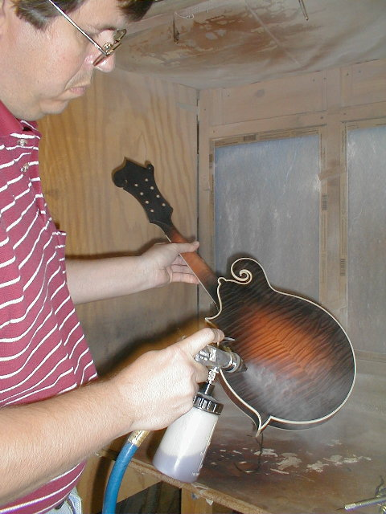
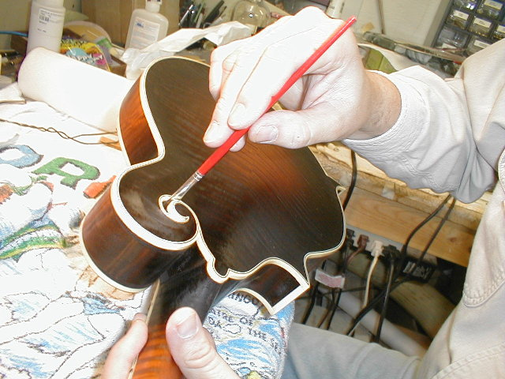
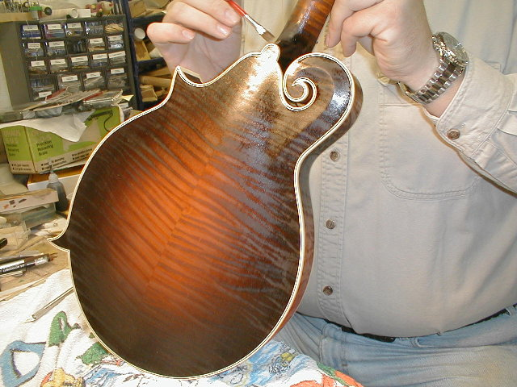
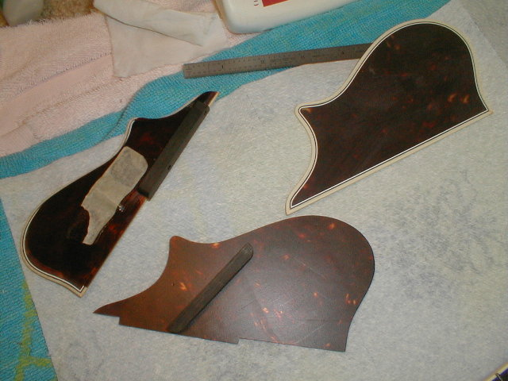
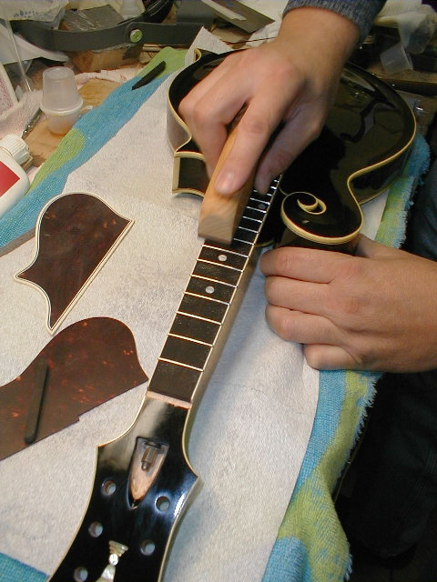
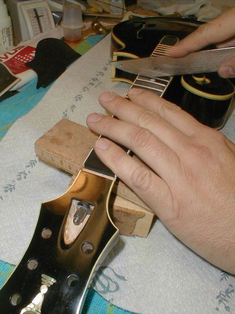
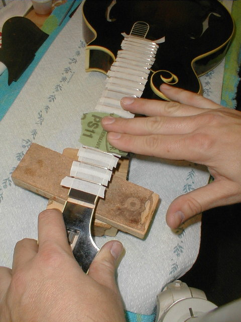
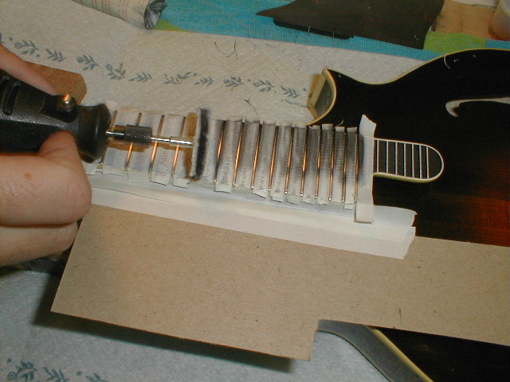

←
12345678910111213
→
Sealing the color, varnishing, Pickguard and freting.
- 
- 134) A sealer is applied first. I use a one pound cut of shellac (dissolved in pure grain alcohol). This is a pretty benign mix, so I don't even use a respirator as I spray. Two light coats is all it takes.
- 
- 135) he varnish is going on at this point and I always brush a few extra coats inside the scroll and under the fingerboard extension. My daughter, Lauren (the strap maker!) took these photos.
- 
- 136) You can see the back of Chris' mandolin here. The figure is really starting to jump out! The picture doesn't do it justice.
- 
- 137) The pickguards are a double layer design (the old Gibson guards were made in both single and double layer models). The small guard at left is completely assembled and ready to install. The top layer of the full size guard is at the far right, and the back layer in the foreground. Also laying on the back layer is an ebony mounting block. You can see it in place on the small one. Instead of mounting the guard in the edge of the fingerboard, I use a threaded insert in the fingerboard extension (under the fingerboard) and a small pin. This allows it to be held securely by the screw, with the pin for alignment. Nothing more is needed with the small guards, but I still use the traditional bracket with the full size model.
- 
- 138) Time to dress the frets. The first step is to level them using a file.
- 
- 139) Next, the frets are crowned. I like the diamond crowning files that Stew-Mac sells.
- 
- 140) After crowning, I radius the ends of the frets with a small needle file, then mask the fingerboard. I take 400 grit sandpaper and back it with my fingers so it conforms to the fret for a final step before buffing. The tape just protects the fingerboard from all of this.
- 
- 141) A dremel tool is used with a cotton buffing wheel and a mild compound to buff the frets to a high shine.
←
12345678910111213
→
© Lynn Dudenbostel, 2002.